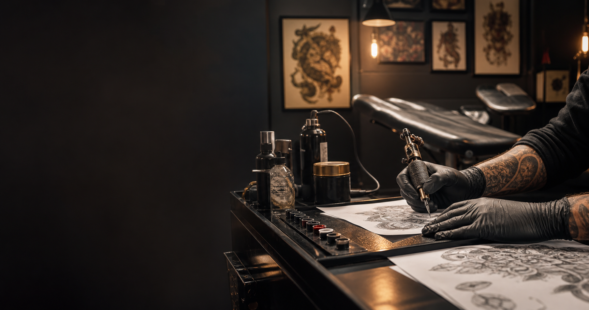

Tattoo custom
Disegni personalizzati, costruiti su stile, posizione e dimensione del tatuaggio.

Tattoo studio a Nova Siri
Tatuaggi custom, linee pulite e progetti costruiti con Maurizio D'Alessandro, dal primo disegno alla cura dopo la seduta.
Respect Tattoo Art nasce a Nova Siri con un approccio essenziale: ascolto, progetto e precisione. Ogni tatuaggio viene ragionato sulle proporzioni del corpo, sulla storia da raccontare e sulla resa nel tempo.
Il proprietario, Maurizio D'Alessandro, segue il cliente nella scelta del soggetto, nella preparazione della seduta e nelle indicazioni di cura post tattoo.
Servizi
Disegni personalizzati, costruiti su stile, posizione e dimensione del tatuaggio.
Studio di coperture e recuperi, con valutazione realistica di spazio, tonalita e risultato.
Confronto iniziale su idea, reference, tempi, budget e cura del tatuaggio.
Portfolio
Segni sottili, dettagli misurati e composizioni leggere.
Neri pieni, contrasti netti e grafiche dal carattere forte.
Geometrie, pattern e simmetrie progettate sulla forma del corpo.
Volumi, ombre e texture per soggetti ad alta presenza visiva.
Cura e metodo
Contatti
Porta reference, dimensione indicativa e punto del corpo. Lo studio ti aiuta a trasformare l'idea in un progetto tatuabile.
Studio Respect Tattoo Art
Luogo Nova Siri, Basilicata
Proprietario Maurizio D'Alessandro